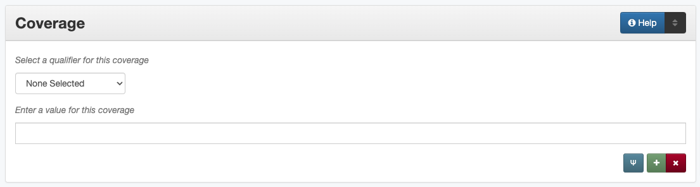

Coverage
Definition
Geographic and temporal information related to the content of the resource.
Where Can the Coverage Information be Found?
In some cases, coverage information may come from accompanying or supplementary information; generally the item must be read/examined to find coverage information, such as:
Item Types |
Information Sources |
|---|---|
For text |
|
For images |
|
For maps |
|
For music scores |
|
For videos |
|
For sound files |
|
For computer files |
|
How Coverage Works in the Metadata Form
- Parts:
Coverage type – drop-down menu
Coverage – text field
Note: Some coverage information opens in a pop-up modal
- Repeatable?
Yes - to include different kinds of coverage information, click ‘Add’ to repeat all field parts
Coverage location (Place Name, Place Box or Point) can be repeated to include multiple places
Coverage eras (Time Period) can be repeated to include multiple eras
Coverage dates should be expressed in a single entry as an individual date or date range(s)
- Required?
No (more information)
How Should the Coverage be Filled in?
General Coverage Guidelines
Multiple places and time periods may be included when relevant
Coverage is about the content of the item
For some items (e.g., original photographs) the coverage date will be the same as the creation date
For text items dates and locations may overlap with creation dates and publisher locations but are often different
For reproductions, consider that the content and creation may not match regardless of type (e.g., a copy negative would have a different creation date than the coverage date, which will match the original photo)
Place Name(s)
Place names include sovereign political entities (such as countries) and continent-level regions
Guidelines |
Examples |
|---|---|
Include any places relevant to the content of the item |
United States
France
|
Note that most locations will already have an established form that should be chosen from the searchable modal. If the location name is not in the system, follow the instructions below. Use a hierarchical format of the current place name in the Geonames Database: |
|
General Format |
|
|
Canada - Ontario Province
England - Brighton and Hove Unitary
Authority - Brighton
Poland - Lower Silesia Province -
Lubin County - Lubin Gmina - Lubin
|
|
Italy - Latium Region - Rome Province - Rome
United States - Louisiana - Caddo Parish -
Shreveport
United States - Illinois - Cook County -
Chicago
|
Levels of Specificity |
|
If the place is a territory or “dependent state,” treat it as a country and do not include the parent nation in the hierarchy |
Guam |
When item content covers continents rather than countries (e.g., maps), use continent names based on the CIA World Factbook (also listed in the) Comments section |
North America
Central America and Caribbean
|
For content about the entire United Kingdom rather than the individual countries, use the “nation” name |
United Kingdom |
Do not include political groups (e.g., the European Union, United Nations, etc.); instead list the relevant member countries based on the content/time of publication |
France
England
Germany
etc.
|
For bodies of water (lakes, rivers, oceans, etc.) and geographic landmarks (e.g., mountains):
|
Coverage Place: United States - Texas
Keyword: Neches River
Keyword: Atlantic Ocean
|
Do not include:
Proper names can be included as keywords |
Coverage Place: United States - Texas -
Palo Pinto County - Mineral Wells
Keyword: Crazy Park
Keyword: New England
|
For a neighborhood, subdivision, or other non-populated place:
|
Coverage Place: United States - Texas -
Taylor County - Abilene
Keyword: Brook Hollow Subdivision
Coverage Place: United States - Texas -
Taylor County
Keyword: Camp Barkeley
|
Note: A CDP is defined according the U.S. Census Bureau and is noted in their database |
Coverage Place: United States - Webb County
- Ranchitos Las Lomas
Coverage Place: United States - Webb County
- Village East Colonia
Keyword: Ranchitos Las Lomas CDP, Texas
|
Name Changes |
|
If the previous hierarchy or version of a place name is important, it may also be added as a historic place name |
Coverage Place: Puerto Rico
Keyword: Porto Rico
Coverage Place: Vietnam - Ho Chi Minh
Municipality - Ho Chi Mihn City
Historic Place Name: Vietnam - Saigon
|
Exceptions
Guidelines |
Examples |
|---|---|
|
United States - New York - New York City
United States - New York - Kings County -
New York City - Brooklyn Borough
|
|
United States - California - Los Angeles County - Hollywood |
|
United States - Washington D.C. |
|
United States - Texas - Galveston County -
Galveston
United States - Indiana - Hancock County -
McCordsville
|
|
United States - Missouri - St. Louis Independent City - St. Louis |
|
France - Île-de-France Region -
Département de Ville de Paris - Paris
Portugal - Distrito de Lisboa - Lisbon
|
Historic Place Name
For places that have changed names, it may be appropriate to include a historic place name, so that users can still search the location in the coverage field
Generally, historic place name(s) will be added in addition to coverage place value(s) that use the current version of the location’s name
In some cases, it may be more appropriate to put the name in a keyword instead, such as the name for a body of water (which is excluded from place names), even if it is a historic usage
Guidelines |
Examples |
|---|---|
|
Yugoslavia - Brod |
United States - Indian Territory - Canadian County - El Reno |
|
U.S.S.R. |
|
France - Alsace Region - Bas-Rhin Department - Herrlisheim |
|
New Spain |
Geocoordinates
Place point and place box are used to represent specific coordinates when available information is more specific than a place name (e.g., place points should not be dropped in a city center unless that is the actual location of the content)
Values may be approximate, but should be as accurate as possible
After choosing place point or place box in the drop-down menu, clicking in the text area will pop up with a Google Maps interface
Follow the instructions in the modal to place a precise point or to draw a box representing the area
Click “Insert” to save the information (the coordinates will automatically be saved in the record)
Geocoordinate options are repeatable, but multiple point(s) or box(es) should be used sparingly, and only when this level of specificity is appropriate
Since these represent different/more specific information, geocoordinate entries should only be use along with the appropriate place name(s)
Place Point
Place points are appropriate to denote a specific location such as:
The vantage point of an image (generally from ground level)
Marking the center of a building for an interior photo (or unknown vantage point of a known building)
Textual content about a building or specific location
Audio/video recorded at a known location (e.g., a building or vantage point)
Place Box
Place boxes are appropriate when content encompasses an entire area, such as:
A map
An aerial photograph
An architectural drawing
A technical report about the survey of a specific area
A pamphlet/guide for a park, historic estate, etc.
Multiple Geocodes
In specific cases where the content encompasses multiple points/areas place points and place boxes are repeatable, such as:
A photo/image collage of multiple buildings or locations-
A technical report of study about multiple discreet areas
A map (box) with an inset photo (point)
Different maps printed on two sides of the same sheet
Time Period
Time period refers specifically to the browse structure used for Portal records
Time period(s) should be chosen from the controlled vocabulary to reflect the era(s) of the content
In cases where the years of the time periods overlap, always use the most generic era unless a more specific one applies
It is important to include the time period whenever possible in Portal records for browsing
Dates
Use the ‘Coverage Date’ qualifier for date(s) represented or discussed in the content
Note that coverage dates will often be broader than the creation date for textual materials (do not copy the creation date as the coverage date unless it matches the content)
Include exact dates when applicable
Only use a single coverage date entry, even when documenting multiple dates or ranges
Use proper formatting:
Guidelines |
Examples |
|
|---|---|---|
|
A photograph taken February 16, 1958 |
1958-02-16 |
|
A calendar of events for August 2001 |
2001-08 |
An annual report for calendar year 1972 |
1972 |
|
A letter written sometime in 1852 |
1852 |
|
Uncertain Dates |
||
|
A map documenting a survey, believed to have occurred in 1720 |
1720? |
A book discussing trends of the 1970s |
197X |
|
|
A letter written mid-May 1862, discussing general news without specific dates |
1862-05~ |
|
A report on archeological findings from 601 BC |
-0601 |
Date Ranges |
||
|
A journal with article content ranging 1908-1928 |
1908/1928 |
An interview discussing events from roughly 2013 until 2018, when it was recorded |
2013~/2018 |
|
Annual financial report for fiscal year 2003 |
2002-09-01/2003- 08-31 |
|
|
A photograph taken at an event held September 12-15, 1974 |
[1974-09-12..1974- 09-15] |
|
Report documenting data collected in 1900, 1950, and 2000 |
{1900,1950,2000} |
Thesis comparing various aspects of WWI and WWII |
{1914-07..1918-11, 1939-09..1945-09} |
|
For additional date formats and examples, see General Date Rules.
Other Examples
- Drawing: Bird’s eye view of Denton, Denton County, Texas: 1883
Place Name: United States - Texas - Denton County - Denton
Coverage Date: 1883
Time Period: new-sou: New South, Populism, Progressivism, and the Great Depression, 1876-1939
- Map: Hispania nova
Place Name: Spain
Place Name: Mexico
Time Period: eur-tex: European Explorers in Texas, 1519-1689
- Letter to Cromwell Anson Jones, May 19, 1869
Place Name: United States - Texas - Galveston County - Galveston
Time Period: civ-war: Civil War and Reconstruction, 1861-1876
Coverage Date: 1869-05
- Photograph: 1918 Morning After
Place Name: United States - Texas - Denton County - Aubrey
Time Period: new-sou: New South, Populism, Progressivism, and the Great Depression, 1876-1939
Coverage Date: 1918-04-15
- [Bell County Ex-Confederate Association Ledger]
Place Name: United States - Texas - Bell County - Belton
Time Period: new-sou: New South, Populism, Progressivism, and the Great Depression, 1876-1939
Coverage Date: 1888~/1920
- Map: Bachman Lake Park: Hike and Bike Trail Plan
Place Name: United States - Texas - Dallas County - Dallas
Coverage Date: 1983-03
Time Period: mod-tim: Into Modern Times, 1939-Present
Place Box: N:32.8683058054, E:-96.8294005002, S: 32.8437915023, W:-96.8905119504
- [Letter to Johnson Moorhead from H. T. Hathaway]
Place Name: United States - Kansas - Reno County - Turon
Time Period: new-sou: New South, Populism, Progressivism, and the Great Depression, 1876-1939
Coverage Date: 1888
- French World War I poster
Place Name: France
Coverage Date: 1914/1917
- [House at 911 N. Sycamore]
Place Name: United States - Texas - Anderson County - Palestine
Coverage Date: 1991-06
Time Period: mod-tim: Into Modern Times, 1939-Present
Place Point: 31.7671795871, -95.6326822933
- Map: Abernathy Quadrangle
Place Name: United States - Texas - Lubbock County - Abernathy
Place Name: United States - Texas - Hale County
Place Box (map boundaries): N:33.88, E:-101.75, S: 33.75, W:-101.88
Place Point (center of quadrangle): 33.81, -101.81
Time Period: tex-land: The Texas Landscape
- Map: Encinal County
Place Name: United States - Texas - Webb County
Historic Place Name: United States - Texas - Encinal County
Time Period: tex-fron: The Texas Frontier, 1846-1861
Time Period: tex-land: The Texas Landscape
- Photograph: The Arsenal - Kremlin offices
Place Name: Russia - Moscow Federal City - Moscow
Historic Place Name: U.S.S.R.
Coverage Date: 1985
Place Point: 55.752042, 37.617935
Time Period: mod-tim: Into Modern Times, 1939-Present
- 1988 Historical Calendar: Mayors of Denton
Place Name: United States - Texas - Denton County - Denton
Coverage Date: 1848-08~/1988
Time Period: new-sou: New South, Populism, Progressivism, and the Great Depression, 1876-1939
Time Period: mod-tim: Into Modern Times, 1939-Present
- Newsletter: Division Log, Number 7158, July 14, 1987
Place Name: United States - Tarrant County - Fort Worth
Coverage Date: 1978/1987-07-14
Time Period: mod-tim: Into Modern Times, 1939-Present
Resources
UNT Coverage Qualifier Controlled Vocabulary
Dates
UNT Coverage Time Period Controlled Vocabulary
Library of Congress Extended Date Time Format
Places
More Guidelines:
Comments
Note: As of February 2014, we are using the GeoNames Database as the authority for place names rather than the Getty Thesaurus of Geographic Names.
Although the coverage element appears to repeat information that could also be placed in other elements, such as subject/keywords and date, it is needed to provide the best interoperability with other metadata and resource-sharing systems. To reduce duplication, it is recommended to use coverage for any relevant content information and only duplicate it when it is applicable to the creation (e.g., the creation date/coverage date for original photographs).
It is strongly recommended that both coverage place(s) and coverage time period(s) be included when known (or reasonably inferred) in order to facilitate the browse structure for Portal records, and to provide the best interoperability with other metadata and resource-sharing systems.
Recommended best practice for encoding the date value is defined in the proposed standards from the Library of Congress: Extended Date Time Format
For more information about date implementation and local practices, see the Date guidelines and the notes in the Comments section.
For coverage place names, the following continent names can be used in place of countries (derived from the CIA World Factbook):
Africa
Antarctica
Arctic*
Australia/Oceania
Central America and Caribbean
Central Asia
East & Southeast Asia
Europe
Middle East
North America
South America
South Asia
Note: Although the “Arctic” is not on the list of continents, it is used as a regional term for maps in the Factbook; it can be used when the item is related to the whole Arctic region rather than specific continents/countries
Based on the browse features in the CIA World Factbook the following countries are in the three Asian regions:
Central Asia
East & Southeast Asia
South Asia
Kazakhstan
Kyrgyzstan
Russia
Tajikistan
Turkmenistan
Uzbekistan
Brunei
Burma
Cambodia
China
Hong Kong
Indonesia
Japan
Laos
Macau
Malaysia
Mongolia
North Korea
Papua New Guinea
Paracel Islands
Philippines
Singapore
South Korea
Spratly Islands
Taiwan
Thailand
Timor-Leste
Vietnam
Afghanistan
Bangladesh
Bhutan
British Indian Ocean Territory
India
Maldives
Nepal
Pakistan
Sri Lanka
Back to Coverage Place Names